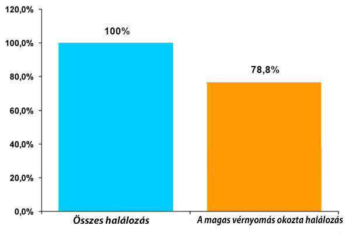

Egészségügyi kérdesek
Ebben a részben vannak közlések Egészségügyi Világszervezet tevékenységéről, melyikeket volták közölve több újságban az egész világban..
Ájulások és az agyi érkatasztófák láz miatt - a halálok 70%-nak az oka az egész világon. Hét ember a tízből a szív vénák bedugítása miatt hallnak meg. Majdnem mindengyik esetben egy - láz miatt van és hipertónia miatt. "Halk gyílkos", így nevezik a karfiológusok, naponta millió életet elvesz. Most előszőr rakunk ki egy témát amiben szerepel a Magyar Kardiólógus Egyetem igazgatója, aki elmondja, hogy mit kell tenni ha rossz láza van és nem akar meghalni alvás közben..
Hipertónia (vérnyomás ugrások) - 89% esetben alvás közben öl meg! 330.000 infarktus 2016-ban! Hogy lehet elmentesíteni magat vérnomás ugrások haláltól - beszélgetés a Magyar Kardiológiai intézetnek a vezetőjével
Senkinek nem titok, hogy szív-selyt betegségek - világ vezető a betegségek közöt az élet összegbe, melyt vesznek el. Nagy vérnyomás (hipertónia) az a legfő oka minden inzultus és infarktusnak, mely van minden szív-selyt betegségekben. Hipertónia az egy ravasz, mely küldi az embert más világra.
Gyógyászati szakértő, magas kategóriás proffeszor, Magyarország Kardiológiai Egyetem igazgatója.
Munka tapasztalat - több mint 40 év
Németh Istvánnal való interjú:
Vendégünk: "Németh István, Tudna mondani valamilyen hipertomia halál statisztikát Magyarországon?"
Ha konkrét esetekről van szó akkor, közel 77-78%-a halálos "természetes" eredmény, és okuk a hipertónia. Abszolút számokkal, akkor közel 330.000 halál 2016-ban és 300.000 2015-ben. Vagy is a számok nagyon félelmetesek. Régebben senki sem ismerte ezeket a számokat, mert nem voltak ilyen statisztikák és analízok. 2011 és 2016 között összeszedtünk oriás mennyiségű információt, ami eléggé szomorú eredményeket hozott.
Levelező: " Milyen módszerrel segít a láz ellen az ilyen szer?"
Németh István: A vérnyomás ugrások mindig a szív izom túlerőltetését jelenti, ami előbb vagy útóbb a szív leállítását jelejti. Másképp mondva, a magas vérnyomás mindig a szív túlerőltetését jelenti 10-20x. Ha a betegség fejlődésének a végéről beszélünk, akkor a hipertónia mindig ugyanahhoz vezet - halálhoz.Amúgy, ha kiválasztju mint az ember halálának az okát, akkor ez történik az esetek 89%-ban. Vagy is az esetek 89%.ban a hipertonia infarktussal vagy agy érkatasztrófáfal végződik. És ha még 20-30 évvel ez előt a betegeknek ilyen diagnozussal volt nem rossz esélye még 10-20 évet élni, most pedig kb. 2/3 (két harmad) páciens az első 5 éven bellűl hal meg.
És főleg az a félelmetes hogy sokan nem is tudják hogy hipertóniával betegek. És kihagyják az esélyt a megváltoztatásra tehetetlenségük miatt halnak meg.
Ezek a szimptomák alapjan lehet a hipertóniát
megazonositani:
Még egy tünet esetén is el kell gondolkozni. De ha már kettő van akkor egyértelműen - önnek hipertóniája van. Szóval, ha az egézségügyi statisztikát nézzük, 67% hipertóniával rendelkező ember nem tudja hogy beteg.
Levelező: "Ön mondta hogy az emberek kihadják a lehetőséget segíteni a szituáción. Hogyan lehetne segíteni rajta? Hogyan tudunk küzdeni a betegséggel? "
Németh István.: Első amit meg kell érteni hogy meg kell szabadulni a legtöbb rossz szokástól, főleg a cigarettázástól és az alkoholtól. Mert az csak rosszá teszi a szituációt. Következő lényeges dolog - leverni a vérnyomást szabad és kell is, e nélkűl sehogy sem lehetne. De ez sehogy sem gyógyítja ki a betegséget. És ha túl sok gyógyszert szed akkor leeshet a vérnyomás ami negatív hatást végez a testre és eljuthat a infarktusíg. Még nem beszélve arról hogy a gyógyszerek nagy túlerőltetést végeznek a májra.
Vagy is, a mai napra, az egyetlen szer ami hivatalosan javasolt az egészségüdi minisztériúm által a hipertónia ellen és azt is használják a kardiólogúsok – ez , ami, eléggé szép áron megvehető! Magyarország minden lakosának! A készítése még pár évvel ez előtt kezdődőtt és nem rég ért véget. A készítésével egy csapat foglalkozott a Német tudományi akadémiából, szorosan dolgozva a gyakorló kardiológusokkal. És végűl sikerűlt egy egyedülálló szer ami nagyon megbízható és legyőzi a hipertoniát meg likvidálja az okát, külömbőzve a más szerektől.
Levelező: "Tud többet mondani a szerről ?"
Németh István.:Ha nem megyünk bele a a kis apró részekbe akkor a szer a betegség okával küzd, aminek köszönhetően megjelenik a lehetőség teljesen megszabadulni a hipertoniától. A tüneteket eltünteti az első hat órán bellűl, az aktív komponensének köszönhetően. Ez adja a lehetőséget már az első használat után ugymond pihenni.
A selytek tónúsa teljesen visszaépűl egy kúra használat után. És hatásos a hipertónia minden szintén. A szer egyértelműen átment minden klínikai kisérleten. És tisztázzni szeretném hogy a hatás ami meg lett mutatva a kisérleten sokkal jobb minden idegen szernél. A legjobb külföldi eredmény az 20-21% megmentett. A mi esetünkben pedig 75-77% megmentett. A többinek pedig még stabilizálódik. Vagy is maga a hipertónia kis alakban marad meg (a selyt tónúsokkal való problémák). De közben nem ugrál a vérnyomás és elképesztően érzi magát.
Magyarországon kívűl, átment klínikai kisérleteken Svédországban és Németországban, amik ugyanígy bevalották a jó hatását. Most külföldön nagyon sokan akarják ezt a szert. De az Egészségügyi minisztériúm szerint ezt a szert csak Magyarország és Németország határain lehet beszerezni ami azzal kapcsolatos hogy túl kevés gyártója van, és még nem kész ennyire sok példányra.
És az Egészségügyi Hivatal segítségével szavazást rendeztünk aminek az eredménye nagyon meghaladta az elvárásainkat.

Gyógyszerek:
"" gyógyszer:
Nép gyógyszerek:
Keresek a megoldást:
Nem hiszem hogy ez lehetséges:
Újságíró: "Hol lehet megvenni ? Szerintem az olvasaink kiváncsiék ra. És mit mondot kedvezményes árról?"
Németh István: Per pillanat gyógyszert kevés adagokkal gyártanak, most már épitenek új gyárakat, melyikek megengednek néhányszor több adagokat gyártani. Azert a gyártó még nem probált gyógyszertárokba kerülni, mert oda egyszerűen nincs mit küldeni - mindent megvesznek még a gyáron az egészségügyi cégek. De addig még ott se lehetett megvenni, mert minden amit legyártották egyből ment a speciálizált korházokba.
Az év elején a gyár kapott az országtól a pénzet arra hogy épisen több gyárt. És az Égeszségügyi kérese után elinditott az eladást külön weboldalon mely csak a betegeknek volt megcsinálva, ahol lehet online megrendelni . Vagy is, elég adni nevét meg a telefonszámot, és utána felhivnák és pontosítanak az adatokat, közbe adnak választ minden felmerült kérdesre. Átküldenek postával vagy futárral. Csak azután fizeti ami után megkapta és átnézte a terméket. A rendszer legértelmesebb, ami egyszerűnek teszi a rendelést azoknak is akik először rendelnek. Személyesen kiprobáltam napokban és nem találtam hibát. Az oldalon azt is lehet látni hogy hány termék maradt a legközelebbi raktárban.
Elinditottunk országos akciót, melynek az a neve - "Egészséges nemzétség", september 15ig tart. A gyógyszernek az ára ténaleg vicces, de nem a pénz a célünk, szeretnünk minden lakónak adni esélyt, lényegtelen hogy mennyit keresi, kiszabadulni a hipertóniától és élni normális egészséges élettel!
Az akciónak a célje: kiszabaditani az embereket a hipertóniától, mely nem csak zavar az embereknek élni, hanem még életveszélyes. Büszkék vagyunk arra, hogy sikerült elinditanunk egy ilyen akciót az országunkban! Most semilyen más országban nincsen ilyesmi!
Fontos! Kiállítottak, hogy a tavasz - legjobb idő a hipertónia gyógyulás kezdésére. Azért mer normálízál az atlag hőmérség, felgyorsul az anyag csere meg vérkeringés vérerekben, gyógyszer hatása növekszik. Hipertónia gyógyulás megy 47%kal gyorsabban, mint más időszákban.
Újságíró: "Szeretne valamit mondani az olvasainknak, mielőtt végzünk?"
Németh István:: Egy, amit szeretnék elmondani – ne legyetek részvétlenek az életükhez. Hipertónia - sájnos gyakori betegség. Felemlitem, hogy 67% hipertónikus, nem is tudja arról hogy beteg. Szerintem egyet értitek - szomorú meghallni a betegségtől, melyről nem is tudtál. Nézitek meg a szimptómákat és hogy ha van valamelyik - szóljön speciálistának vagy használjön . A tervezőjek miatt, tud szerezni egyedi gyógyszert, mely nincsen máshol a világon. Ez egyedi gyógyszer mely stabilizál vérnyomást meg gyógyít szív hipertóniát, melyiket hivtalosan ajanlott a MAGYARORSZÁGI ÉGESZSÉGÜGYI HIVATALA. Használjön ki az esélyt ahelyett, hogy alázatosan var a halalra infarktustól .
Felemlitunk, hogy Kardiológiai intézet az Égeszségügyi Hivatallal együtt tartanak az akciót "Egészséges nemzétség". Mely időjében "" gyógyszer kedvezményesen kapható. Siessen, az akcióst gyógyszer csomag limetált!
Linkek a témához

Barbara Kaszás
Valamelyik egészségiügy újságban olvostam erről a gyógyszerről. Valamelyik szakértő cikkben, Németh szerintem....
6 órával ez előtt
Noémi Gáti
Siófoki vagyok, de megrenteltem, kiderült hogy az az akció már nem csak Budapesten tart és én is kaptam gyógyszert kedvezményesen kaptam! Azéert nyugodtan rendejetek a gyógyszert, biztosra emlékszem hogy Budapesten, Győrben, Sopronban, és még pár városba már elinditottak az akciót. Először hallottam a gyógyszerről három hónapja és egyből megrendeltem. Nagy bajaim voltak vérnyomással. És itt meg az első nap után - egyszer se ugrott. Most egyszerűen élek az életet.
6 órával ez előtt
Enikő Babai
Én is hallottam valahol róla. Valaki az ismerősem között rendelt maganak. Nekem már két éve vannak problémák vérnyomással, most elolvastam és rosszul lettem. Megrendelek és megprobálok. Vicces az ár.
7 órával ez előtt
Gergő Nemes
Én is megrendeltem. Megigértek egy héten belül hozni, várom
7 órával ez előtt
Renáta Varga
Nem rég neztem a műsort a hipertóniáról. Ott meseltek erről a dyógyszerről, mondtak, hogy nálunk csináltak meg a legjobb hipertónia ellen gyógyszert a világon. Valami minister is volt ott.
8 órával ez előtt
Bence Ott
Ez nem egy átverés? Miért interneten árulnák
8 órával ez előtt
Dóra Papp
Bence, olvosott a szöveget egyáltalán? Az interneten árulnak azért,mert kevéset gyártanak. De hogy ha kerül a gyógyszertárokba akkor akorra árok lesznek, itt meg egyből a gyártótól. És még fizetni csak akkor kell_, amikor megkapott és átnézett a csomagot. Meg az interneten most mindent árulnak, ruha, tv, butor stb.
8 órával ez előtt
Fanni Rácz
A kedvezmény - az nagyon jó! Megrendeltem, nekem is vannak bajaim. Remélem segít)
8 órával ez előtt
Réka Nagy
olvastam a hozzaszólásokat és arra jöttem ra, hogy meg kell vennem ) Megrendelem.
8 órával ez előtt
Cintia Puskás
Szeretnék Németh Istvánt megköszöni!! Nekem segített!!! Egyből jobban lettem. Eltűntek nyomás problémáim. Jobb lett a hangulatom, jött az életkedvem, élek az életett! Iszom már egy hónapja. Köszönömm szépen!
8 órával ez előtt
Vivien Gősi
Rendeltem a ferjemnek. Az erdmény volt már egy hónap mulva. Boldog lett, addig meg mindig szomorú volt.
8 órával ez előtt
András Tóth
Üdvözlöm. Nekem "" segített meggyógyítani a hipertóniát. Csak jó hatása van, észre vettem hogy mennyire jobban érzem magam. Folytatom szedni, időbe mentett a műtéttől. Én úgy gondolom hogy a szervezet is képes bármilyen betegség ellen kiállni!
8 órával ez előtt
Fő oldal
Egészségügyi kérdesek
Adatok és statisztika
Központi újság
Publikációk
Országok
Programok és projektek
Irányító szervezetek
WHO-ról
Kapcsolati információk
Gyakori kérdesek
Munka WHO-ban
Ajánlat
Bizalmasság
Levélek
Afrikai régió
Amerikai régió
Délkelet Ázsia régió
Európa régió
Keleti földközi-tenger régió
Csendes-óceán nyugati régió
© WHO